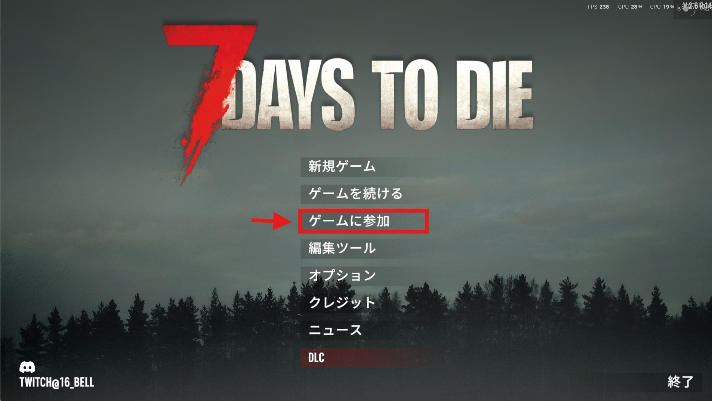
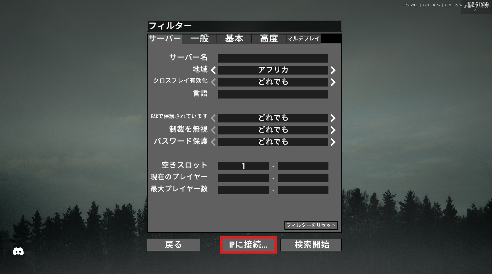
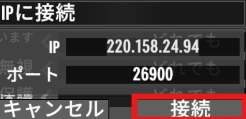

7 Days to Die サーバー接続手順
7 Days to Dieを起動
7 Days to Dieを起動して「ゲームに参加」をクリックします。

IPに接続
フィルターの 「IPに接続」 を選択します。

IPに接続
IPに「220.158.24.94」、ポートに「26900」を入力して接続します。

関連ガイド
サーバーに追加されているMODのガイドはこちら：
🤖
Drone Locator MOD
行方不明のドローンをコマンドで即座に発見
ガイドを見る